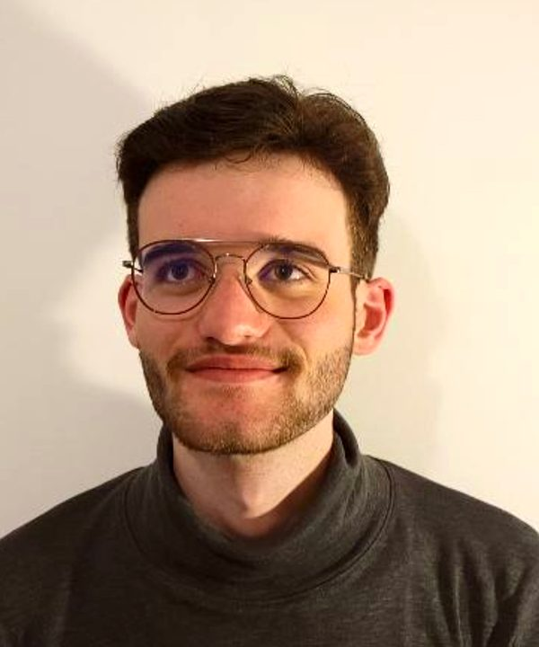
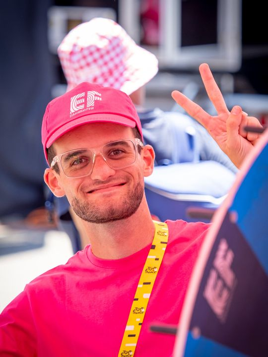
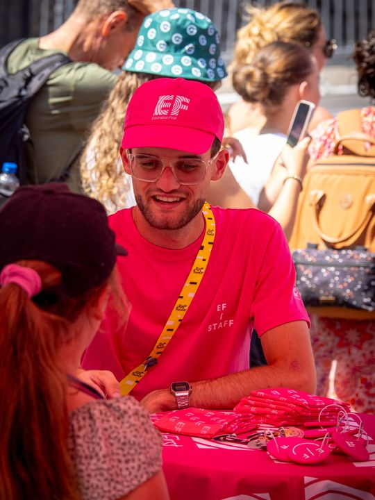
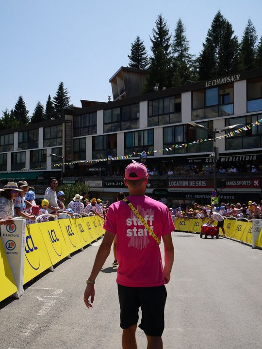

Clarté, c'est pourl'élève qui travaille mais stagne
Votre enfant comprend en classe. Il bloque seul.
Je l'aide à passer de « j'ai compris quand le prof l'a fait » à « je sais le refaire tout seul, même quand l'exercice change ». Pas juste un prof. Un traducteur.
comprendre≠réciter·savoir refaire seul·moins de stress en cours·plus de confiance·une méthode, pas des recettes·comprendre≠réciter·savoir refaire seul·moins de stress en cours·plus de confiance·une méthode, pas des recettes·
Le vrai problème
L'illusion de compréhension
Beaucoup d'élèves suivent très bien en classe. Ils hochent la tête, recopient la correction, tout semble clair. Puis devant la copie, seuls, plus rien ne vient.
Ajouter des heures ne règle pas ça. Il faut repérer ce qui est cru compris, le reconstruire, et l'entraîner jusqu'à l'autonomie.
« Il ne comprend pas quand il est seul. »« Les maths, c'est toujours la bagarre. »« Il stagne, alors qu'il travaille. »
Ce que je vois souvent au début :
C'est ce dernier palier que le brevet évalue. C'est là que je travaille.
Témoignages
Ce qu'en disent les familles
11→TB
Angélina, de 11/20 à la mention très bien au brevet, en un trimestre.
8→12
Gabin pensait avoir 8 ou 9 à l'épreuve de spé maths. Il a obtenu 12.
Avis écrits
← faites glisser →
“
I
Isabellemaman · préparation au brevet
★★★★★
Nous recommandons Arnaud, jeune professeur qui accompagne ma fille de 15 ans pour le brevet, avec beaucoup de sérieux et de bienveillance. Il a su mettre en place un récapitulatif systématique sur feuille blanche, ce qui lui permet de vérifier les acquis, de structurer les notions et de consolider les révisions de manière très efficace. Pour nous, d'avoir un retour sur la séance, sa gentillesse, sa patience et sa pédagogie mettent ma fille en confiance. Elle apprécie sincèrement les moments d'accompagnement et progresse avec plus de sérénité.
“
S
Saraélève de Première · spé maths
★★★★★
Mes parents et moi avons décidé de faire appel à un professeur de maths afin de m'aider à rattraper mon retard. Arnaud est très pédagogue et comprend rapidement mes besoins. Il adapte ses explications en fonction de mes difficultés, ce qui m'aide à mieux comprendre les notions travaillées. Je me sens déjà mieux accompagnée dans mon travail.
“
G
Famille de GabinPremière · spé maths
★★★★★
Gabin avait pris du retard sur certains chapitres de la spécialité mathématiques. Il avait du mal à comprendre les notions et surtout à les appliquer aux exercices. Donc il ne se sentait pas prêt pour l'épreuve. Ce qui a bien marché, c'est que tu sois très à l'écoute de ses besoins, et surtout la façon d'aller à l'essentiel. Il a obtenu la note de 12 alors qu'il pensait avant tes cours avoir 8/9. Il a repris tes explications et cela lui a permis de travailler plus sereinement.
“
S
Stéphanecollègue enseignant
★★★★★
Arnaud est un collègue passionné et rigoureux. Empathique avec ses élèves, sa pédagogie et ses résultats sont étonnants. Je le recommande !
“
O
Océanemaman
★★★★★
Parfait ! Professeur très à l'écoute, professionnel et accessible. Il propose des méthodes modernes, s'adapte au niveau de mon fils et met en place une approche pédagogique efficace pour l'aider à progresser. Son travail est réfléchi et ses explications sont toujours claires. Il sait également tenir compte des difficultés que rencontre mon fils, prendre le temps de réexpliquer si nécessaire et instaurer un climat de confiance. Une excellente pédagogie et un accompagnement de qualité. Je recommande fortement.
“
C
Charlineélève de Première · maths tronc commun
★★★★★
Je suis une élève de première générale avec maths en tronc commun, et j'ai commencé les cours particuliers à quelques semaines des épreuves. Honnêtement, ça m'a vraiment aidée à tout remettre à niveau sur les chapitres de l'année. Arnaud explique très bien, de façon claire et structurée, ce qui permet de comprendre même les notions les plus compliquées. Il prend le temps de revenir sur les points non compris sans jamais mettre de pression, ce qui rend les séances très agréables et efficaces. La méthode de travail est très bonne : les exercices sont bien choisis, progressifs et adaptés à mon niveau. Tout est bien organisé, et les supports et documents envoyés sont propres et utiles pour réviser ensuite. Grâce à cet accompagnement, je me sens beaucoup plus en confiance en mathématiques à l'approche du bac. Je recommande vivement Arnaud.
“
E
Emmarecommandation
★★★★★
Je recommande vivement Arnaud pour la qualité de son accompagnement en cours particuliers. Il possède une réelle capacité à mettre ses élèves en confiance dès les premières séances. Grâce à son écoute attentive, sa patience et sa bienveillance, il crée un climat rassurant qui permet à chacun de progresser à son rythme sans crainte de l'erreur. Arnaud sait valoriser les efforts autant que les résultats, ce qui renforce l'estime de soi et la motivation de ses élèves. Il prend le temps d'expliquer différemment lorsque cela est nécessaire et adapte sa pédagogie aux besoins spécifiques de chacun. Son attitude positive et encourageante aide les élèves à croire en leurs capacités et à gagner en autonomie. Au-delà des compétences académiques, Arnaud transmet confiance et méthode, deux éléments essentiels pour réussir durablement.
“
L
Louiseélève
★★★★★
Parfait ! Le cours était très bien organisé et cela m'a permis de bien comprendre les notions et d'ensuite pouvoir m'exercer. C'était très intéressant !
“
C
Chantalgrand-mère
★★★★★
Arnaud a été un super prof pendant les grandes vacances pour ma petite-fille, sa pédagogie et sa gentillesse l'ont beaucoup aidée pendant les 4 ans pour sa progression en maths.
“
W
Willyrecommandation
★★★★★
Arnaud est un professeur très sympathique et professionnel. Il explique les notions de manière simple et donne de bons conseils pour progresser. Les cours sont agréables et efficaces !
“
C
Carolinemaman de Juliette
★★★★★
Parfait ! Mon premier cours avec Arnaud s'est très bien déroulé, il est à l'écoute, calme et agréable.
“
D
Dorianélève
★★★★★
Si vous avez des lacunes en maths ou pour du perfectionnement, c'est la meilleure personne à contacter. Explication, compréhension, il a tout.
“
C
Clémentrecommandation
★★★★★
Un excellent prof ! Je le recommande vivement pour un accompagnement vers le brevet.
“
R
Rédharecommandation
★★★★★
Lors de mes échanges avec Arnaud, j'ai directement ressenti sa passion pour l'enseignement. Il a tout pour être un superprof !
Tout commence par un appel diagnostic offert. On choisit ensuite la formule qui correspond à votre enfant. Les deux se complètent : les cours traitent ses blocages en direct, l'Académie l'entraîne entre les séances.
Offert
D'abord, l'appel diagnostic
Un échange en visio avec le parent et l'élève, sans engagement. On repère ce qui est compris et ce qui est cru compris, et vous repartez avec des pistes concrètes.
Une semaine de vacances pour combler les lacunes, reprendre confiance et repartir du bon pied. En visio, avec moi, sur les chapitres qui posent problème.
4 formules au choixséances d'1 h 30, selon le besoin de votre enfant
1séancepour débloquer un point précis
3séancespour reprendre un chapitre
4séancespour consolider plusieurs notions
6séancespour une vraie remise à niveau
Parrainage · Une séance offerte pour chaque proche recommandé qui démarre un accompagnement Clarté.
Comment ça se passe
Trois étapes, toujours dans cet ordre
1. Diagnostiquer
On repère les faux savoirs
Un appel offert pour comprendre la situation : ce qui est vraiment compris, ce qui est cru compris, et ce qui bloquera plus tard.
2. Reconstruire
On explique autrement
Jusqu'à ce que l'élève puisse réexpliquer lui-même. Pas de par cœur, pas de recettes : comprendre, puis appliquer.
3. Rendre autonome
On entraîne seul
Exercices à niveaux, défis, chasse à l'erreur. Les parents suivent la progression avec un plan d'action clair.
Votre enfant n'est jamais seul devant l'écran : chaque étape est cochée, suivie, et vous savez où il en est.
← faites glisser →
LundiLa vidéo et la leçon
J'explique la notion en vidéo, l'élève a la leçon en PDF.
MardiLa fiche à niveaux
Exercices ●○○ ●●○ ●●●, corrigés.
MercrediLe live
En direct avec moi, avec le défi du mercredi.
JeudiJe m'entraîne autrement
Chasse à l'erreur, atelier de rédaction, situations concrètes.
VendrediLes étapes cochées
Je vois l'avancée de chaque élève.
SamediLa communauté
Questions et entraide entre élèves.
DimancheLe plan d'action
Partagé dans le groupe avec les parents.
Exemple de semaine type : le rythme s'adapte à chaque élève.
4eL'année du déclic
14 modules du programme officiel, un module « Fondations » pour reprendre les bases, et un escape game final.
3eLe saut de palier
Consolider toute l'année et s'entraîner sur ce que le brevet demande vraiment.
2deLe passage au lycée
Solidifier le calcul et les fonctions, prendre le rythme du lycée et préparer le choix des spécialités.
1reSpé maths
Second degré, suites, dérivation, exponentielle, probabilités, puis l'expertise de spécialité.

fondateur de Clarté

Tour de France

expliquer à tous

en plein air
Été 2026 : animateur avec EF Education First sur le Tour de France. Capter l'attention et expliquer simplement, à tous les âges.
Qui je suis
Bonjour, moi c'est Arnaud.
J'ai toujours aimé expliquer. Au fil des cours, j'ai vu beaucoup d'élèves travailler dur, réussir parfois, sans jamais vraiment comprendre. Le jour où l'exercice change, tout s'écroule.
J'ai compris que le problème n'était pas les maths, mais la façon d'apprendre à penser. C'est pour ça que j'ai créé Clarté : faire comprendre pour de vrai, puis rendre l'élève capable de se débrouiller seul.
2020
Bac S mention très bien19/20 en maths, 20/20 en espagnol · Brevet d'initiation aéronautique (BIA)
2020 – 22
Cycle préparatoire intégré en école d'ingénieursENIT (École nationale d'ingénieurs de Tarbes) : maths, physique, sciences de l'ingénieur
2022
Premiers élèves en ligneProfesseur de maths en visio chez GoStudent, du collège au lycée
2024
Licence de mathématiques, parcours métiers de l'enseignementUniversité de Toulouse : didactique et enseignement des maths
2025
Création de ClartéPlus de 60 familles accompagnées et plus de 600 heures de cours depuis
2026
L'Académie Clarté et une équipeAmbassadeur EF Education First, animateur EF sur le Tour de France · Formation continue en pédagogie avec Les Nouveaux Profs
Spécialité · de la 4ème à la Première : brevet, passage au lycée, spé maths et orientation. Langues · accompagnement Bachibac possible en espagnol.
Je reste votre interlocuteur principal, mais une petite équipe travaille avec moi pour que chaque élève et chaque famille soit bien suivi.
Δ
C'est pour vous si…
votre enfant comprend quand on lui explique, mais pas seul
il bloque dès que l'exercice change
vous voulez qu'il devienne autonome avant le brevet
Ce n'est pas pour vous si…
vous cherchez seulement plus d'heures de cours
il vous faut une solution express la veille d'un contrôle
vous voulez des recettes à apprendre par cœur
Questions fréquentes
Ce que les parents me demandent
Mon enfant ne va-t-il pas décrocher, seul devant l'écran ?
C'est la crainte numéro un, et toute l'Académie est construite contre ça :
chaque leçon a des étapes que l'élève coche, et je vois qui avance et qui bloque ;
le live du mercredi permet de poser ses questions en direct ;
un plan d'action est partagé dans un groupe qui inclut les parents ;
une petite équipe m'aide à suivre chaque famille.
La visio, c'est aussi efficace qu'en présentiel ?
Oui, à condition que l'élève soit actif, et la visio y aide :
on travaille sur le même document à l'écran, et votre enfant rédige lui-même pendant que je corrige en direct ;
il garde une trace écrite de chaque séance, à relire avant un contrôle ;
pas de trajet : les séances se calent plus facilement, même en semaine ;
entre les séances, les ressources de l'Académie et le live du mercredi prennent le relais.
L'appel diagnostic, lui aussi en visio, vous permet de vous faire une idée sans engagement.
Combien ça coûte ?
Le tarif dépend de la formule et du besoin de votre enfant. On en parle pendant l'appel diagnostic, une fois que j'ai compris la situation. L'appel est offert et sans engagement.
Y a-t-il un engagement ?
Aucun pour l'appel diagnostic. L'Académie fonctionne en abonnement : votre enfant garde l'accès tant que vous le souhaitez. Les modalités exactes vous sont expliquées pendant l'appel.
Comment se passe le paiement ?
Par virement. Les cours particuliers sont réglés par forfait, avant les séances, en début de mois ou de trimestre. L'Académie fonctionne en abonnement payé d'avance. Le tarif adapté à votre enfant est défini pendant l'appel diagnostic.
Cours particuliers ou Académie : que choisir ?
Les deux se complètent. Les cours particuliers traitent en direct les blocages de votre enfant. L'Académie lui donne de quoi s'entraîner seul entre les séances, avec un suivi de son avancée. On décide ensemble de la bonne formule pendant l'appel diagnostic.
Que se passe-t-il pendant l'appel diagnostic ?
On échange avec vous et votre enfant : ses notes, ce qui le bloque, ce qu'il a déjà essayé. Je repère ce qui est compris et ce qui est seulement « cru compris », puis je vous propose la formule adaptée, ou je vous oriente ailleurs si ce n'est pas le bon choix.
Mon enfant a déjà un bon niveau, c'est utile ?
Oui. Beaucoup d'élèves passent de « bon » à « très bon » quand ils arrêtent d'appliquer des recettes et comprennent vraiment. C'est souvent ce qui fait la différence au brevet et pour l'orientation au lycée.
Quels niveaux accompagnez-vous ?
Je suis spécialisé de la 4ème à la Première : préparation au brevet, passage au lycée, spécialité maths. L'accompagnement en espagnol pour le Bachibac est aussi possible. J'ai déjà accompagné des élèves d'autres niveaux : si votre enfant est plus jeune, parlons-en pendant l'appel.
Premier pas
Parlons de votre enfant
L'appel diagnostic est offert et sans engagement. Choisissez directement un créneau de 30 minutes dans mon agenda.
Format · en visio, où que vous soyezEmail · comprendrepourmieuxexpliquer@gmail.comTéléphone · 06 62 71 71 43WhatsApp · m'écrire sur WhatsAppAvis · Google · 5,0 ★ sur SuperprofYouTube · @clarte-arnaudLinkedIn · Arnaud, Clarté